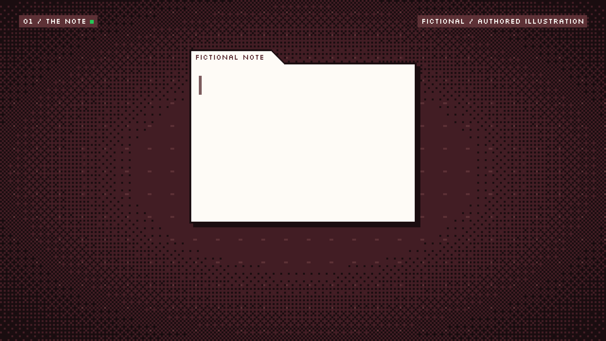
00:00.9Here is a fictional meetingA paper note card slides in at centre. Chip: FICTIONAL NOTE · AUTHORED ILLUSTRATION.
00:03.3Sam will send the draftThe note's one line types on as it is spoken: "Sam will send the draft on Friday."
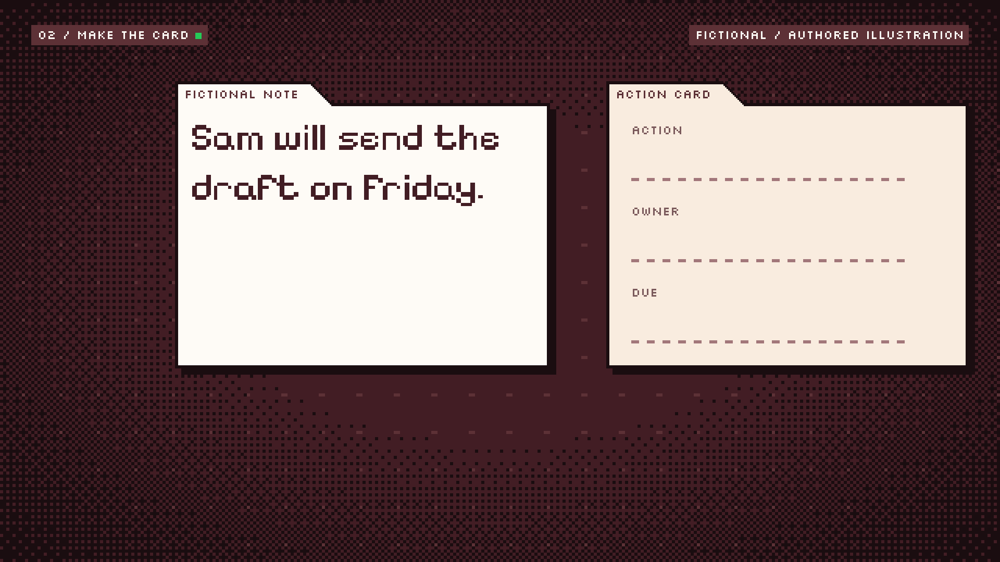
00:06.0Let's turn it into anThe note moves to the left half. An empty ACTION CARD appears on the right with three blank rows: Action / Owner / Due.
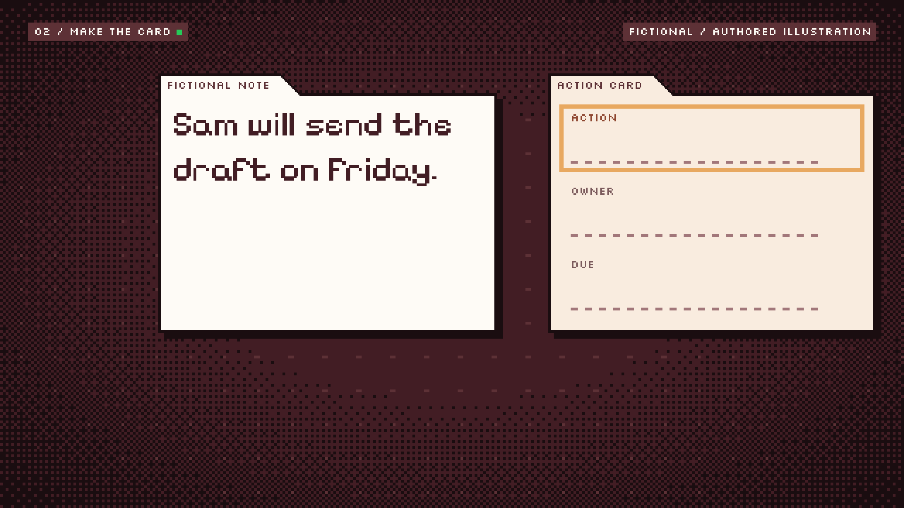
00:08.4First, the action.The Action row lights in amber. The other two rows dim.
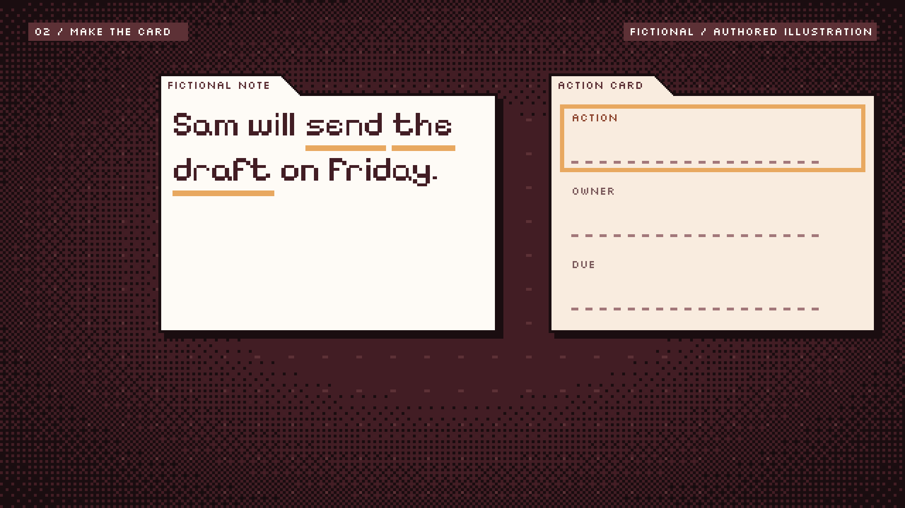
00:10.0What needs to happen?An amber underline sweeps under "send the draft" in the note.
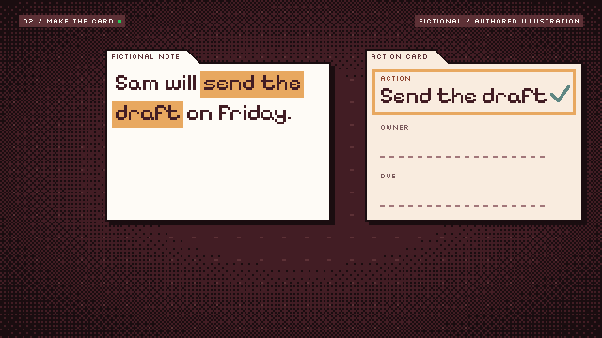
00:11.5Send the draft.The underlined words lift off the note and drop into the Action row as "Send the draft". A small check mark appears.
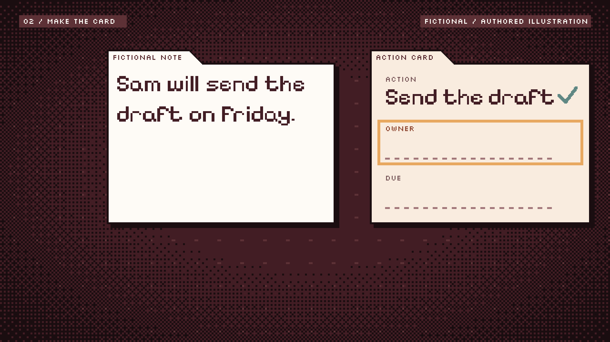
00:13.0Next, the owner.The Owner row lights in amber.
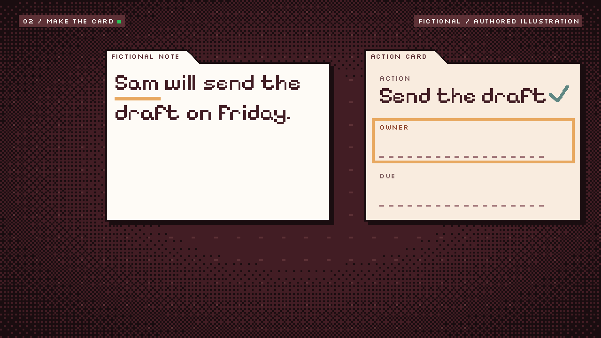
00:14.4Who will do it?An amber underline appears under "Sam" in the note.
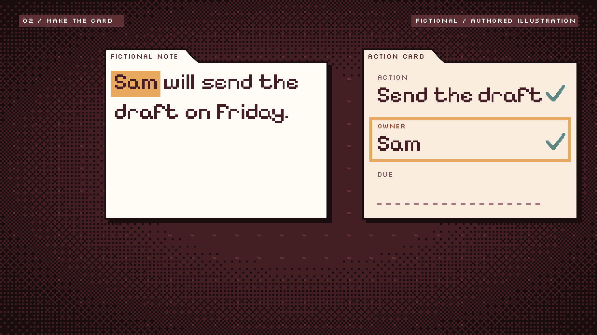
00:15.5Sam."Sam" drops into the Owner row. Check mark.
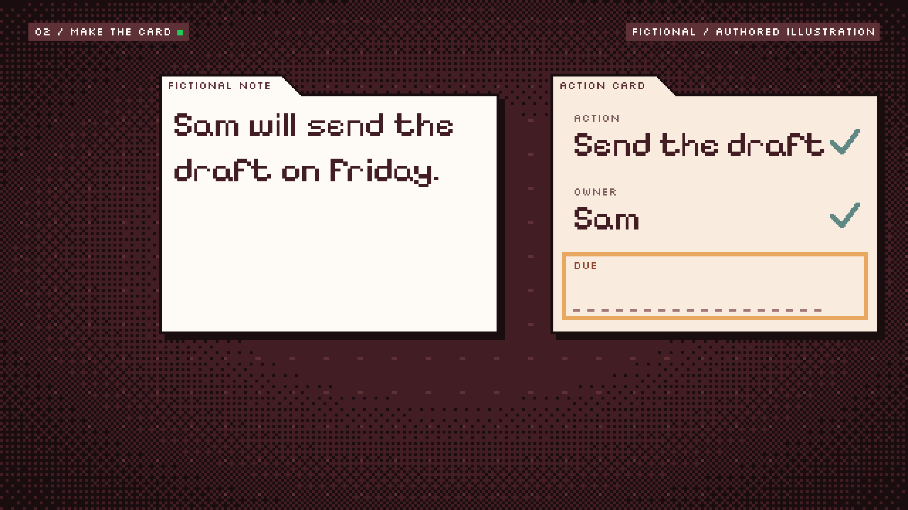
00:16.8Then, the due day.The Due row lights in amber.
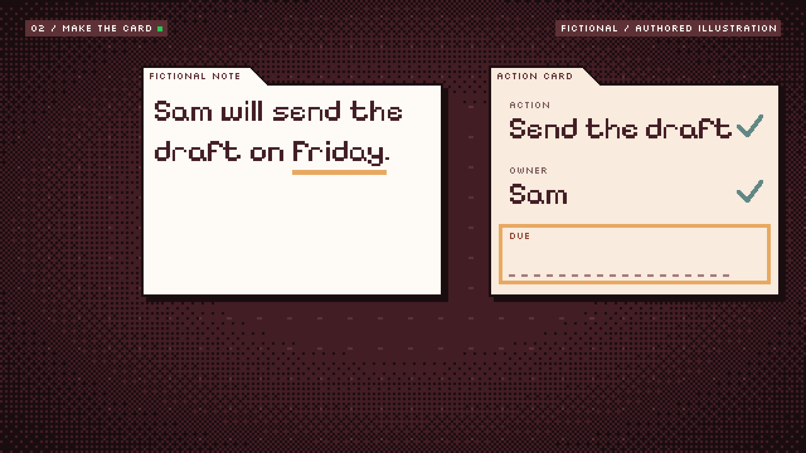
00:18.4When is it due?An amber underline appears under "Friday" in the note.
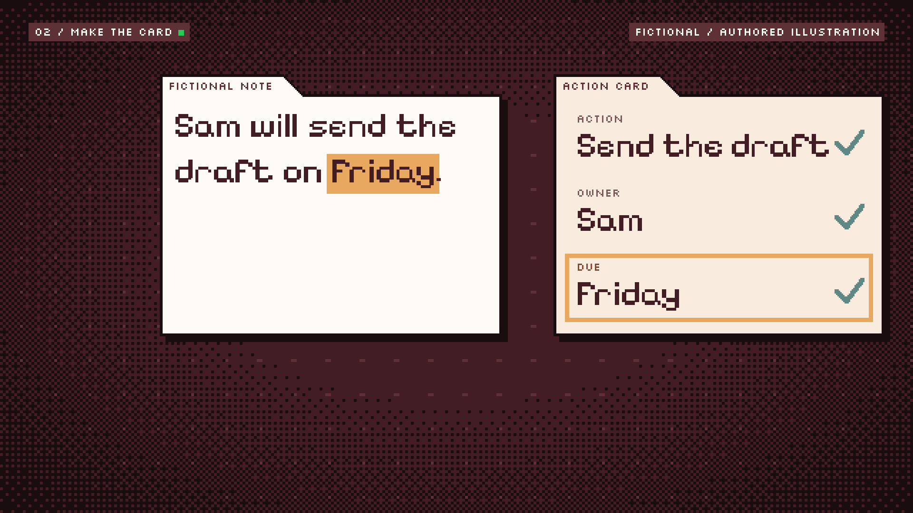
00:19.6Friday."Friday" drops into the Due row as plain text, with no date and no calendar. Check mark.
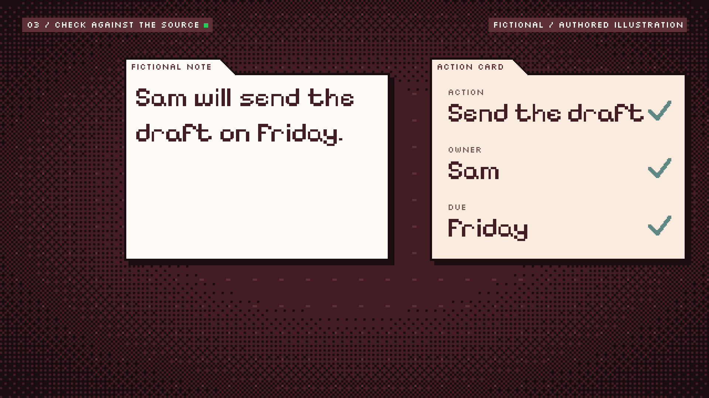
00:21.0Now compare the card withSide by side: the note on the left and the finished card on the right, the same size and level. Chip: CHECK AGAINST THE SOURCE.
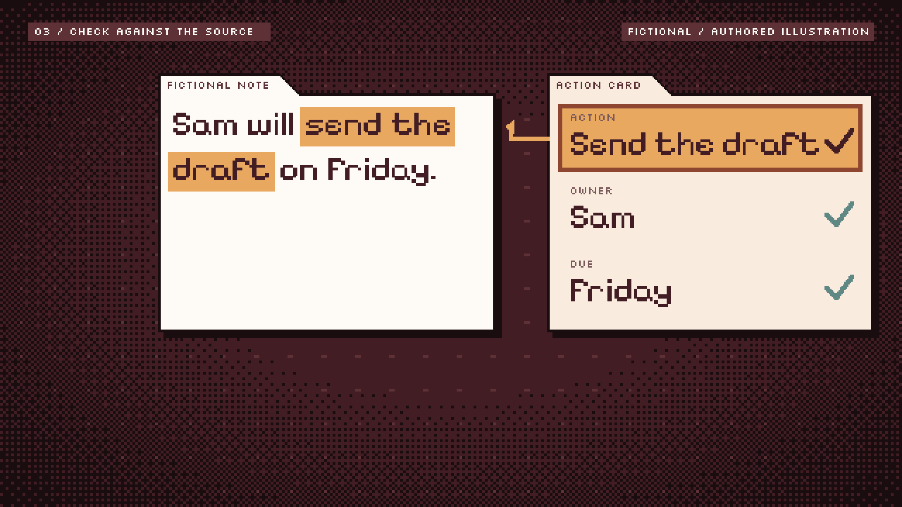
00:23.3Send the draft.A line draws from the card's Action row to "send the draft" in the note. Both glow.
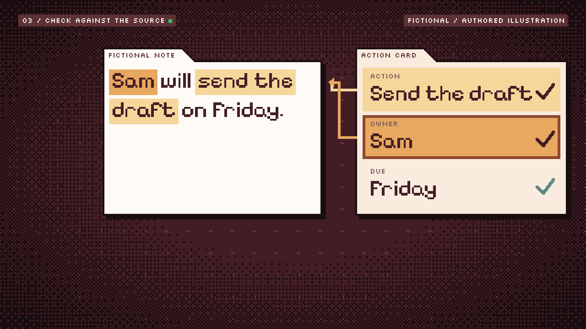
00:24.5Sam.A line draws from Owner to "Sam".
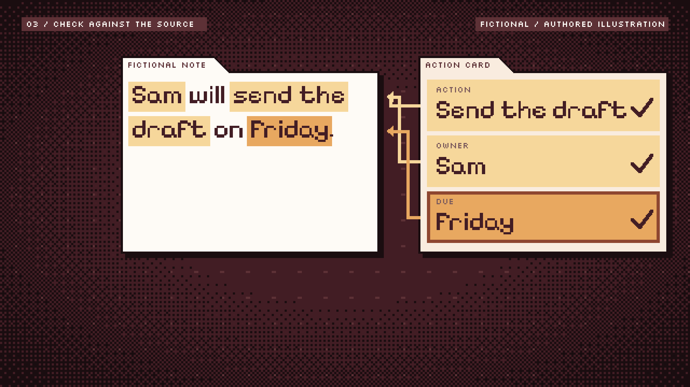
00:25.5Friday.A line draws from Due to "Friday". The +0.6 offset is there because Whisper timed this "Friday" at 24.30, but the audio has it at about 24.9 (REVIEW.md).
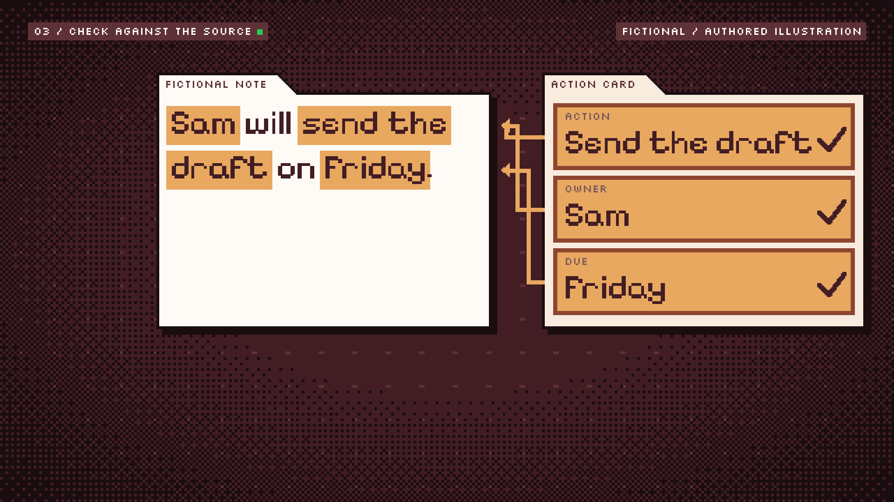
00:26.8Each field comes straight fromAll three lines glow together. Every word on the card is now linked to the note.
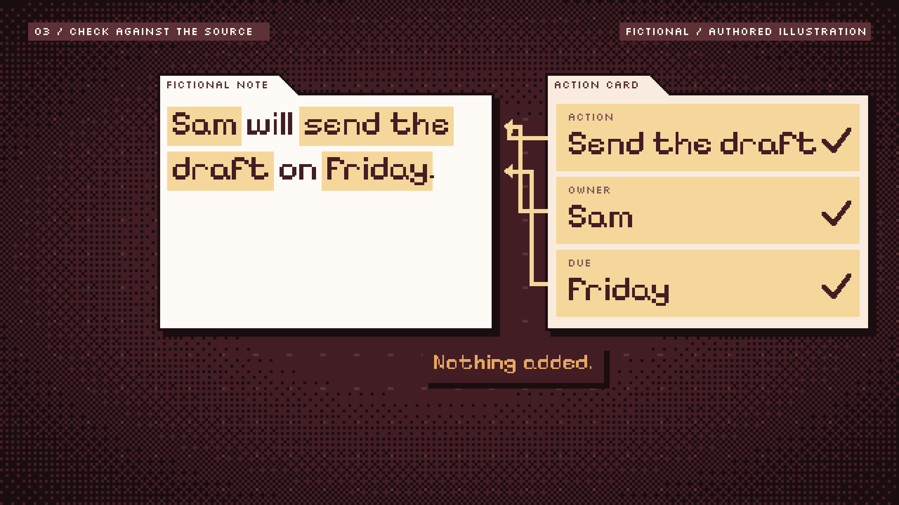
00:30.2Nothing was added.A plate under the card reads: Nothing added. The card still has exactly three rows.
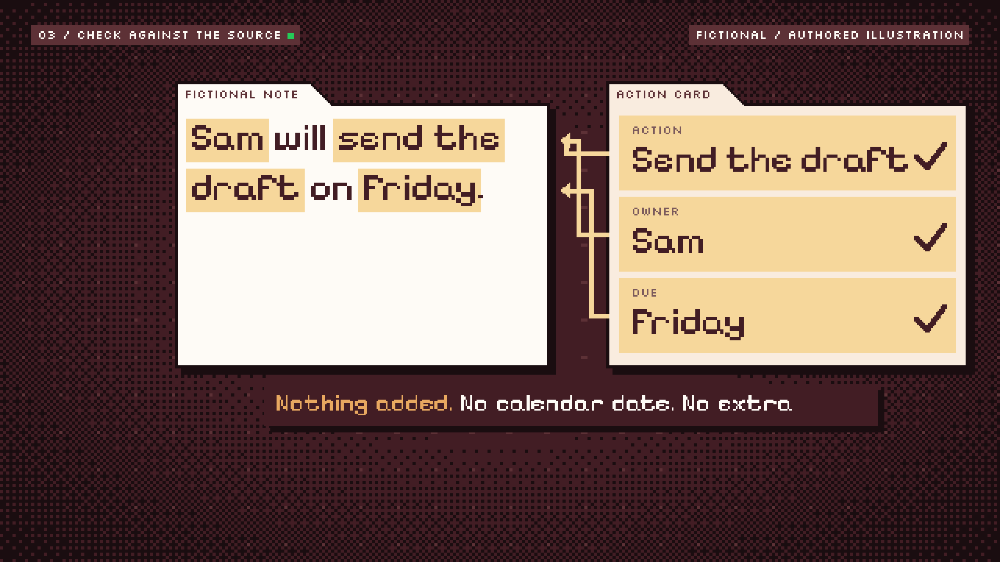
00:31.7No calendar date, and noThe plate adds a line: No calendar date. No extra work. Hold the side-by-side to the end (33.7s).